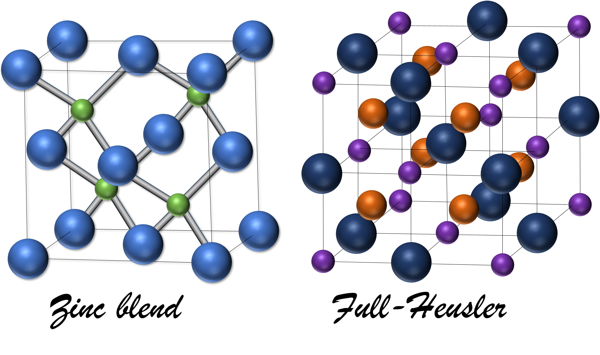
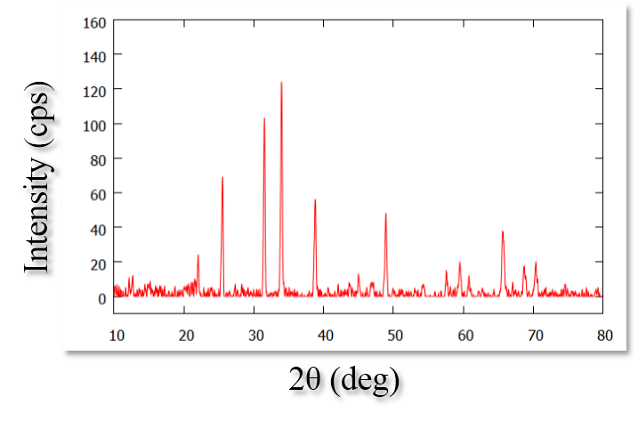
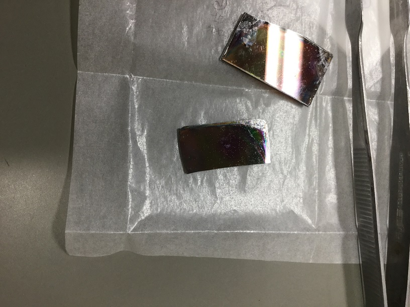

本研究室では、電子材料・磁性材料・光学材料に関する研究を行っています。
このページは来年度、５年生で卒業研究のために研究室に入る電子工学分野の４年生向けに書かれています。当分野の学生は、３年生までは主に電子回路や電気回路、プログラミングについて学んできており、 電子材料を学ぶのは４年生の後期になってからです。そのため、電子材料について興味をもつというのは難しいのだろうと思います。できるだけ平易に研究紹介をしたいと思います。
-

- 
-

電子工学（エレクトロニクス）で使うためには、信号（電圧や電流、光、圧力、磁気など）を素子が感知し、 それが電圧または電流の形に変換され、２年生や３年生の実験でいつも使ってきた電圧計や電流計で測定可能になる必要があります。 それらが最終的にセンサーに使われるか、発電デバイスに使われるかなどの違いはありますが、そのようなものを電子材料と呼んでよいと思います。 また、逆に電圧や電流を素子に入力することで、光を発したり、磁気を帯びたりするものも電子材料と呼ばれます。
十分に成熟した現代では、通常の生活の中で、こんな新しいデバイスがあったらよいのに、と考えることは難しいと思います。 しかし、すでにあるデバイスの中には、問題を抱えているものが複数存在します。 代表的なものをあげると、光センサーやLEDなどはカドミウムやヒ素などの有毒な元素とインジウムなどのレアメタルを含んでいます。 可能ならば、安全かつ入手のしやすい元素で作製でできた方がよいでしょう。
また、近年、授業で学んだIoTやビッグデータの活用を背景に、大容量の記憶デバイスの需要が増しています。 年々、HDDやSSDの記憶容量が増えているので、実感がある人もいると思います。 加えて、パソコンやサーバー、マイコンなどのコンピュータを多く利用する現代では、容量の増加と平行してコンピュータの消費電力の低減も課題です。 容量の増加や消費電力の低減は、デバイスの改良だけでなく、使用する材料の変更によっても実現できます。
このような理由で、当研究室では電子材料について研究をおこなっています。
どのような学生に来てほしいか
４年生の電子材料の講義を受けて、もっと詳しく学びたいと思った人はこの分野に親和性があると考えてよいと思います。
まず、２年生まで学んだ化学に興味がある人にも来てほしいと思います。 エタノールなどのアルコールを溶媒とし、塩化すず・２水和物やチオ尿素などを溶質として溶かし、その溶液を加熱することで、硫化すずという1.3eVのバンドギャップをもつ半導体を作製するという研究をおこなっています。 溶液に酸やキレート剤を追加で混ぜるということをするのですが、反応過程を考えることができるとより研究を楽しめると思います。

溶媒などの条件を変えて作製した溶液

溶液をガラス板に塗って300度で加熱し、溶媒を蒸発させて得られた膜。膜が黒いのは可視光を吸収するバンドギャップをもつ半導体であるため
また、４年生で学んだ数値解析について興味がある人にも来てほしいです。 強磁性体（磁石のこと）の研究がこの十数年、活発に行われている背景を受けて、磁性体のシミュレーションプログラムを作製しています。 磁性体内部の磁気が時間と空間を変数とする偏微分方程式で記述できるのですが、それを手計算で行えるのは球や無限遠に長い円柱や、無限遠に平たい直方体だけです。 ベクトル解析の知識が必要になるので数学が苦手ではなく、かつプログラミングも苦手でないという条件に当てはまる人でないとこの研究は進められないと思います。

対象とする磁性材料や形状に対して、有効磁場をどのように記述するか、どのような数値解析アルゴリズムを構築するかが課題となる
また、どこで聞きかじったかわかりませんが、真空機器と取扱い技術を習得したいという方も受け入れられると思います。 残念ながらターボ分子ポンプの中を見てみたいと言われても壊れると非常に困るので見せてあげることはできませんんが、大気圧から高真空まで持っていくにはどうすればよいかや、真空漏れの対策、ベーキングの効果を体験することはできます。

分子線エピタキシー装置。ゲートバルブの開閉手順などを間違えると大変なことになるので残念ながら学生に使わせてあげることはできない
教員側もどうすればうまくいくのか、どういう結果が得られるのかやってみないと分からないことを対象に研究しているので、地道に目標に向かって試行錯誤を繰り返しながら進めることが出来る人で、これらのどれかに興味があれば、ぜひ希望してください。
(C) 2014- 釧路工業高等専門学校 創造工学科 エレクトロニクスコース 機能材料研究室. All rights reserved.